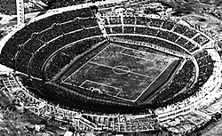
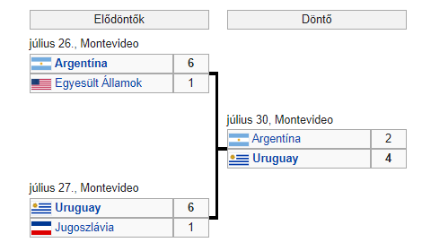
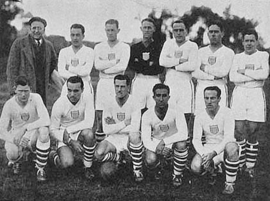

Az 1930-as labdarúgó-világbajnokság a futball történetének első világbajnoksága volt. A FIFA által már harmadszor kiírt, ténylegesen az első vb-t Uruguayban rendezték, július 13. és július 30. között. A világbajnokságon profik, félprofik és amatőrök akadálytalanul játszhattak egymás ellen, ez azért figyelemre méltó, mert a NOB az olimpiákról kitiltotta a profikat. A FIFA Uruguayt az 1929. május 18-i, barcelonai konferencián választotta meg a világbajnokság házigazdájának. A vb ötlete Jules Rimettől jött, aki akkoriban a FIFA elnöke volt. A magyar futballt az újvilágban, a FIFA által a torna nemzetközi zsűrijébe delegált Fischer Mór képviselte, aki 1927-ben a FIFA alelnöke volt.
Estadio Centenario stadium:
Egyenes kieséses szakasz:
Az Egyesült Államok válogatottja:
